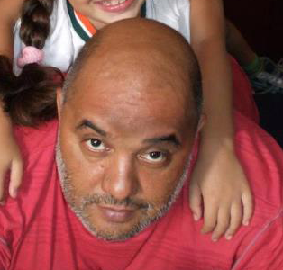

<ion-view view-title="Sintomas">
  <ion-content>
    <div ng-show="usuarios"> 
      <div class="row" ng-click="clickUsuario()"> 
        <a class="item item-thumbnail-left" href="">
          
          <h2>Titular 1</h2>
          <h2>Nome: Aparecido Vilela</h2>
          <p>Idade: 40 anos.</p>
          <p>Sexo: Masculino.</p>
        </a>
      </div>
      <div class="row" ng-click="clickUsuario()"> 
        <a class="item item-thumbnail-left" href="">
          
          <h2>Dependente 1</h2>
          <h2>Nome: Cassio Abreu Pedrali</h2>
          <p>Idade: 23 anos.</p>
          <p>Sexo: Masculino.</p>
        </a>
      </div>  
      <div class="row" ng-click="clickUsuario()"> 
        <a class="item item-thumbnail-left" href="">
          
          <h2>Dependente 2</h2>
          <h2>Nome: Flávia Clerica</h2>
          <p>Idade: 16 anos.</p>
          <p>Sexo: Feminino.</p>
        </a>
      </div>
      <div class="row" ng-click="clickUsuario()"> 
        <a class="item item-thumbnail-left" href="">
          
          <h2>Dependente 3</h2>
          <h2>Nome: Rita Berardi</h2>
          <p>Idade: 24 anos.</p>
          <p>Sexo: Feminino.</p>
        </a>
      </div>  
    </div>
    <div ng-show="showPesquisa">
      <div class="list list-inset">
        <label class="item item-input">
          <i class="icon ion-search placeholder-icon"></i>
          <input type="text" placeholder="Pesquisar" ng-model="pesquisa" ng-change="dor(pesquisa)">
        </label>
      </div>
      <div ng-hide="!dorDiv" class="teste">
        <ion-list>
          <ion-radio ng-model="choice" ng-value="'A'">Dor de cabeça</ion-radio>
          <ion-radio ng-model="choice" ng-value="'B'">Dor no estômago</ion-radio>
          <ion-radio ng-model="choice" ng-value="'C'">Dor na barriga</ion-radio>
          <ion-radio ng-model="choice" ng-value="'D'">Dor lombar</ion-radio>
          <ion-radio ng-model="choice" ng-value="'E'">Dor na coluna</ion-radio>
        </ion-list>
        <button class="button button-full button-light">
          mais...
        </button>
      </div>
      <div ng-show="choice">
        <button class="button button-full button-balanced" ng-click="buscarMedicos()">
          Buscar médicos
        </button>
      </div>
    </div>
  </ion-content>
</ion-view>